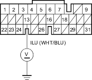
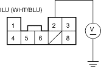

KS Model
- Press the brake pedal.
Are the brake lights ON?
YES - Go to step 2.
NO - Repair faulty brake light circuit. 
- Turn the ignition switch ON (ll).
- With the accelerator pedal released, press the brake pedal.
- Measure the voltage between PCM connector terminal E13 and body ground.
PCM CONNECTOR (31P)

Wire side of female terminals
Is there voltage?
YES - Go to step 5.
NO - Go to step 6.
- Measure the voltage between the No. 2 terminal of the interlock control unit connector and body ground remaining the accelerator pedal released and pressing the brake pedal.
INTERLOCK CONTROL UNIT CONNECTOR

Wire side of female terminals
Is there voltage?
YES - Turn the ignition switch OFF and go to step 10.
NO - Repair open or short in the wire between PCM connector terminal E13 and the interlock control unit.